Wichtiger und kurz gefasster Guide zum Meistern der Arbeit mit KiCad um erfolgreich anspruchsvolle elektronische Platinenlayouts entwickeln zu können.
Copyright
Dieses Dokument ist geschützt © 2010-2015 durch deren Beitragende welche nachfolgend aufgeführt sind. Sie können es nach den Bedingungen der GNU General Public License (https://www.gnu.org/licenses/gpl.html), Version 3 oder später, oder der Creative Commons Attribution License (https://creativecommons.org/licenses/by/3.0/), Version 3.0 oder später verteilen oder verändern.
Alle Markenrechtsnamen in diesem Guide gehören den rechtmäßigen Eigentümern.
Beitragende
David Jahshan, Phil Hutchinson, Fabrizio Tappero, Christina Jarron, Melroy van den Berg.
Übersetzung
Carsten Schönert <c.schoenert@t-online.de>, 2016.
Feedback
Bitte alle Bug Reports, Vorschläge oder neue Versionen an folgende Adressen richten:
-
KiCad Dokumentation: https://github.com/KiCad/kicad-doc/issues
-
KiCad Software: https://bugs.launchpad.net/kicad
-
KiCad Software i18n Übersetzung: https://github.com/KiCad/kicad-i18n/issues
Datum der Veröffentlichung
16.05.2015
1. Vorstellung von KiCad
KiCad ist ein Open Source Softwaretool zum Erstellen von elektronischen Schaltplänen und PCB Layouts. Durch seine einheitliche Schnittstellentechnik verbindet KiCad elegant die einzelnen folgenden eigenständigen Software Tools:
| Program Name | Beschreibung | Datei Erweiterung |
|---|---|---|
KiCad |
Project Manager |
*.pro |
Eeschema |
Schaltplan Editor (Schaltplan und Bauteile) |
*.sch, *.lib, *.net |
CvPcb |
Footprint Auswahl |
*.net |
Pcbnew |
Leiterplatten Editor |
*.kicad_pcb |
GerbView |
Betrachter Gerberdateien |
Alle üblichen Gerberformate |
Bitmap2Component |
Konvertiert Bitmapgrafiken in Bauteile oder Footprints |
*.lib, *.kicad_mod, *.kicad_wks |
PCB Calculator |
Kalkulator für Bauteile, Leiterbahnbreite, Elektrische Abstände, Farbcodes, und mehr |
Keine |
Pl Editor |
Seiten Layout Editor |
*.kicad_wks |
|
Anmerkung
|
Die Liste der Datei Erweiterungen ist nicht komplett und beinhaltet nur eine Teilmenge der Dateien mit denen KiCad arbeitet. Diese ist jedoch hilfreich für ein Basiswissen welche Dateien in den einzelnen KiCad Applikationen benutzt werden. |
KiCad kann als ausreichend ausgereift betrachtet werden um erfolgreich auch komplexe elektronische Schaltungen und Leiterplatten entwickeln und managen zu können.
KiCad hat keine Beschränkungen bei der Platinengröße und es kann einfach bis zu 32 Kupferlagen kontrollieren, bis zu 14 technische Lagen und bis zu vier Hilfslagen. Ebenso kann KiCad alle Dateien erstellen die nötig sind für gedruckte Schaltungen, ebenso Gerber Dateien für Foto Plotter, Bohrdateien, Bauteilplatzierungsdateien und noch vieles mehr.
Durch die Open Source Ausrichtung (GPL Lizenz) repräsentiert KiCad sich als das ideale Tool für fortschrittlich ausgerichtete Projekte die elektronische Hardware erstellen.
Im Internet ist KiCad beheimatet unter:
1.1. Herunterladen und Installieren von KiCad
KiCad läuft auf GNU/Linux, Apple OS X und Windows. Sie finden die aktuellsten Anleitungen und Download Links unter:
|
Wichtig
|
Stabile Veröffentlichungen von KiCad erscheinen periodisch nach den KiCad Stable Veröffenlichungsregeln. Neue Features werden kontinuierlich im Entwicklungsbranch hinzugefügt. Wenn Sie die Vorteile dieser neuen Funktionen nutzen wollen oder helfen wollen beim Testen dieser, laden Sie bitte die aktuellste Entwicklungsversion (nightly builds) für Ihre Plattform herunter. Entwicklungsversionen können neue Fehler enthalten, aber es ist dem KiCad Development Team ein Anliegen den aktuellen Entwicklungs Branch bestmöglich benutzbar zu halten während dem Hinzufügen neuer Funktionen. |
1.2. Unter GNU/Linux
Stabile KiCad Veröffentlichungen können in den meisten Paketverwaltungen der jeweiligen Distribution gefunden werden, meistens unter den Namen kicad und kicad-doc. Wenn Ihre Distribution nicht die aktuelle stabile Version bereit hält dann folgen Sie den Anweisungen für die Entwicklerversion und wählen die letzte stabile Version.
Entwicklerversionen werden vom aktuellsten Source Code erstellt. Diese Versionen können manchmal Fehler enthalten die beschädigte Dateien verursachen können, defekte Gerber Dateien oder ähnliches, aber im Grunde stabil sind und die aktuellsten Features enthalten.
In Ubuntu, der einfachste Weg um Entwicklerversionen zu installieren ist via PPA und Aptitude. Dazu sind folgende Eingaben in einem Terminal nötig:
sudo add-apt-repository ppa:js-reynaud/ppa-kicad
sudo aptitude update && sudo aptitude safe-upgrade
sudo aptitude install kicad kicad-doc-en
In Fedora ist der einfachste Weg Entwicklerversionen zu installieren via copr. Um KiCad durch copr zu installieren bitte folgende Eingaben in einem Terminal tätigen:
sudo dnf copr enable mangelajo/kicad
sudo dnf install kicad
Oder alternativ können Sie vorkompilierte Versionen von KiCad herunterladen und installieren. Oder Sie laden den Source Code herunter und kompilieren und installieren KiCad selbst.
1.3. Unter Apple OS X
Stabile Versionen von KiCad für OS X können auf http://downloads.kicad-pcb.org/osx/stable/ gefunden werden.
Entwicklerversionen werden vom aktuellsten Source Code erstellt. Diese Versionen können manchmal Fehler enthalten die beschädigte Dateien verursachen können, defekte Gerber Dateien oder ähnliches, aber im Grunde stabil sind und die aktuellsten Features enthalten.
Die Entwicklerversionen können auf http://downloads.kicad-pcb.org/osx/ gefunden werden.
1.4. Unter Windows
Stabile Versionen von KiCad für Windows können auf http://downloads.kicad-pcb.org/windows/stable/ gefunden werden.
Entwicklerversionen werden vom aktuellsten Source Code erstellt. Diese Versionen können manchmal Fehler enthalten die beschädigte Dateien verursachen können, defekte Gerber Dateien oder ähnliches, aber im Grunde stabil sind und die aktuellsten Features enthalten.
Für Windows stehen Entwicklerversionen auf http://downloads.kicad-pcb.org/windows/ bereit.
1.5. Support
Wenn Sie Ideen, Anmerkungen oder Fragen haben, oder einfach nur Hilfe benötigen:
-
Besuchen Sie das Forum
-
Verbinden Sie sich mit dem #kicad IRC channel auf Freenode
-
Werfen Sie einen Blick in die Tutorials
2. KiCad Arbeitsablauf
Ungeachtet der Ähnlichkeiten mit anderen PCB Software Tools charakterisiert sich KiCad durch einen interessanten Arbeitsablauf in dem Bauteilkomponenten und Footprints zwei verschiedene Einheiten bilden. Dies ist oft ein Diskussionspunkt in Internetforen.
2.1. Übersicht KiCad Arbeitsablauf
Der Arbeitsablauf in KiCad beinhaltet zwei Hauptvorgänge: Erstellen des Schaltplanes und Anlegen der Platine. Dazu sind zwei Arten Bibliotheken, die Bauteilbibliotheken und die Bibliotheken der Footprints, nötig. KiCad hat zahlreiche dieser Bibliotheken. Und wenn diese nicht ausreichen, KiCad besitzt ebenso die nötigen Tools um neue Bibliotheken zu erstellen.
In der nach folgenden Grafik sehen Sie ein Flussdiagramm welches den KiCad Arbeitsablauf darstellt. Das Bild erklärt die Schritte und deren Reihenfolge die nötig sind beim Arbeiten mit KiCad. Wenn möglich wird das zugehöre Icon des Menüpunktes mit dargestellt.
Für mehr Informationen über das Erstellen eines Bauteils schauen Sie bitte in die Sektion Erstellen von Bauteilen in KiCad. Und für mehr Informationen über das Erstellen eines neuen Footprints schauen Sie bitte in die Sektion Erstellen eines Footprints in diesem Dokument.
Auf der folgenden Seite:
finden sie ein Beispiel wie man ein Tool benutzen kann wodurch Sie schnell KiCad Schaltplansymbol Bibliotheken erstellen können. Für weitere Informationen über quicklib sei auf folgende Sektion in diesem Dokument verwiesen: Erstellen von Schaltplansymbolen mit quicklib.
2.2. Vorwärts und Rückwärts Annotation
Ist ein elektronischer Schaltplan mal gezeichnet ist der nächste Schritt diesen in eine Platine (PCB, Printed Cicruit Board) umzuwandeln. Wenn das Platinenlayout komplett oder auch nur teilweise erstellt worden ist müssen zusätzliche Bauteile oder Netze hinzugefügt werden, oder auch Bauteile verschoben werden und anderes mehr. Dies kann auf zwei Arten erfolgen: Vorwärts Annotation und Rückwärts Annotation.
Rückwärts Annotation ist der Prozess eine PCB Layout Veränderung zurück zum entsprechenden Schaltplan zu schicken. Einige betrachten diese spezielle Funktion aber als nicht besonders nützlich.
Bei der Vorwärts Annotation werden Veränderungen am Schaltplan an die zugehörige Platine geschickt. Dies ist ein wichtiges Feature da Sie nicht wirklich die Platine jedes mal neu entwerfen wollen sobald Sie eine Veränderung am Schaltplan durchführen. Vorwärts Annotation ist in der Sektion Vorwärts Annotation in KiCad erläutert.
3. Elektronische Schaltpläne zeichnen
In diesem Abschnitt werden Sie lernen wie man einen elektronischen Schaltplan mit Kicad zeichnet.
3.1. Benutzung von Eeschema
-
Unter Windows starten Sie kicad.exe. In einem Linuxsystem führen Sie kicad in einem Terminal aus. Daraufhin befinden Sie sich nun im Hauptfenster vom KiCad Projektmanager. Von hier aus haben Sie Zugriff auf die acht eigenständigen Softwaretools: Eeschema, Bauteileditor, Pcbnew, PCB Footprint Editor, GerbView, Bitmap2Component, PCB Kalkulator und Pl Editor. Es sei nochmal auf das Schema des KiCad Arbeitsablauf verwiesen um zu verstehen wie die Tools benutzt werden.
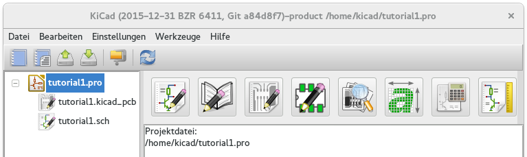 -
Erstellen Sie ein neues Projekt: Datei → Neues Projekt → Neues Projekt. Benennen Sie die Projektdatei tutorial1. Die Projektdatei wird automatisch um die Erweiterung ".pro" ergänzt. KiCad wird nach einem zugehörigen Ordner für das Projekt fragen, bestätigen Sie diese Frage mit "Ja". Alle zugehörigen Projektdateien werden in diesem Ordner gespeichert.
-
Lassen Sie uns nun einen Schaltplan erstellen. Starten Sie den Schaltplaneditor Eeschema
 . Es
ist der erste Button auf der linken Seite.
. Es
ist der erste Button auf der linken Seite.
-
Klicken Sie auf das Icon Seite einrichten
 in der Toolbar. Setzen
Sie die Seitengröße auf A4 und geben Sie als Titel Tutorial1 ein. Wenn
nötig können noch mehr Informationen eingeben werden. Betätigen Sie OK. Die
Informationen werden im Schaltplan in der unteren rechten Ecke
eingefügt. Benutzen Sie das Mausrad um in das Blatt hinein zu
zoomen. Speichern Sie das gesamte Projekt: Datei → Schaltplanprojekt
sichern
in der Toolbar. Setzen
Sie die Seitengröße auf A4 und geben Sie als Titel Tutorial1 ein. Wenn
nötig können noch mehr Informationen eingeben werden. Betätigen Sie OK. Die
Informationen werden im Schaltplan in der unteren rechten Ecke
eingefügt. Benutzen Sie das Mausrad um in das Blatt hinein zu
zoomen. Speichern Sie das gesamte Projekt: Datei → Schaltplanprojekt
sichern
-
Wir werden nun das erste Bauteil platzieren. Klicken Sie auf das Icon Bauteil hinzufügen
 in der rechten Toolbar. Die selbe Funktion erreichen Sie auch wenn Sie
den Tastaturbefehl (a) für Bauteil hinzufügen benutzen.
Anmerkung
in der rechten Toolbar. Die selbe Funktion erreichen Sie auch wenn Sie
den Tastaturbefehl (a) für Bauteil hinzufügen benutzen.
AnmerkungSie können eine Liste der möglichen Tastaturbefehle sehen wenn Sie ? eingeben. -
Klicken Sie in die Mitte vom Schaltplan. Ein Bauteilauswahl Fenster wird sich öffnen. Wir werden einen Resistor (Widerstand) hinzufügen. Im Filterfeld geben Sie R ein für Resistor. Sie werden den Titel device über dem Resistor bemerken. Dieser Titel device ist der Name der Bibliothek in dem das Bauteil zu finden ist, welche eine generische und nützliche Bibliothek ist.
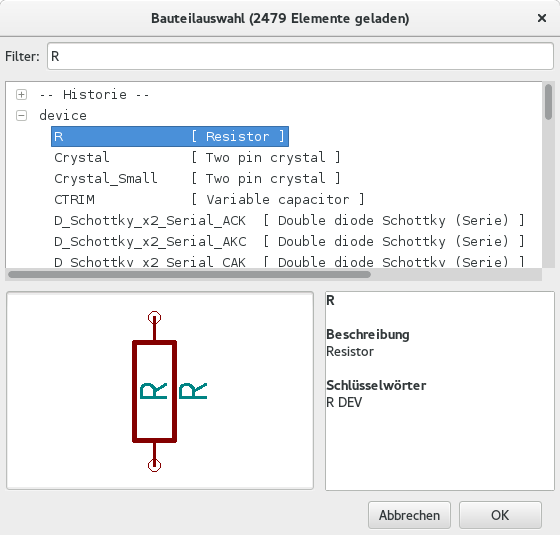 -
Klicken Sie doppelt auf die Auswahl. Das wird das Fenster Bauteilauswahl schließen. Platzieren Sie das Bauteil im Schaltplan indem Sie an der Stelle klicken wo es eingefügt werden soll.
-
Klicken Sie auf das Lupensymbol um in das Bauteil hinein zu zoomen. Alternativ benutzen Sie das Mausrad um hinein oder heraus zu zoomen. Drücken und halten Sie das Mausrad fest während Sie die Maus bewegen um dann das Arbeitsblatt horizontal und vertikal zu verschieben.
-
Bewegen Sie den Mauszeiger über das Bauteil R und betätigen die Taste r. Das Bauteil sollte rotierten. Sie müssen nicht auf das Bauteil klicken um dieses zu rotieren.
AnmerkungWenn Ihre Maus gleichzeitig über Feld Referenz (R) oder Feld Wert (R?) war wird ein Menü erscheinen. Sie werden das Menü Klarstellung der Auswahl oft in KiCad sehen, dieses erlaubt das Arbeiten an Objekten die aufeinander liegen. In diesem Fall hier sagen Sie KiCad das Sie die Aktion auf das Bauteil …R… ausführen wollen. -
Klicken Sie mit der rechten Maustaste auf das Bauteil und wählen Bauteil editieren → Wert. Sie erreichen das gleiche Ergebnis wenn sie den Mauszeiger auf das Bauteil bewegen und die Taste v betätigen oder alternativ die Taste e benutzen um mehrere generelle Werte zu ändern. Beachten Sie die beim Rechts Klick zu sehenden Buchstaben der Tastaturbefehle.
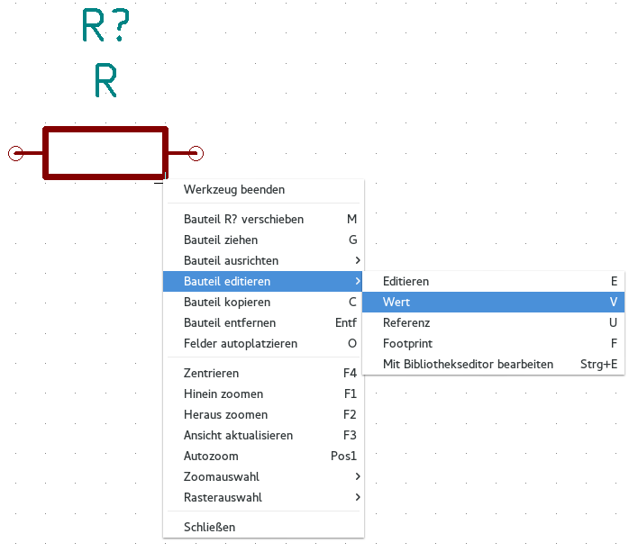 -
Das Feld Wert editieren Fenster wird erscheinen. Verändern Sie den aktuellen Wert R mit 1k und bestätigen mit OK.
AnmerkungVerändern Sie nicht das Referenzfeld (R?), dies wird später automatisch durchgeführt. Der Wert vom Resistor sollte nun 1k sein. 
-
Um einen weiteren Resistor zu platzieren klicken Sie einfach an der Stelle im Schaltplan wo der Resistor abgelegt werden soll. Das Fenster Bauteilauswahl wird wieder geöffnet.
-
Der Resistor der zuvor ausgewählt worden ist wird nun in der Historie als R angezeigt. Betätigen Sie OK und platzieren das Bauteil.
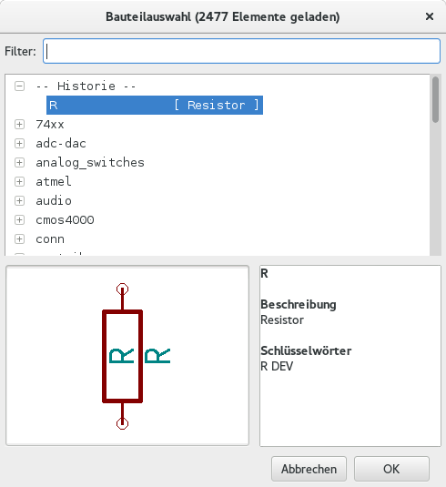 -
Im Fall das ein Fehler gemacht worden ist und das Bauteil wieder gelöscht werden soll genügt ein Rechts Klick auf das Bauteil und ein Anklicken von Bauteil entfernen. Dies löscht das Bauteil vom Schaltplan. Oder man bewegt den Mauszeiger über das Bauteil und betätigt die Entf Taste.
AnmerkungSie können jede Taste mit Tastaturbefehlen editieren indem Sie Einstellungen → Tastaturbefehle → Tastaturbefehl editieren aufrufen. Alle Veränderungen werden sofort gespeichert. -
Ein schon vorhandenes Bauteil im Schaltplan kann einfach dupliziert werden in dem man den Cursor über das zu kopierende Bauteil bewegt und dann den Buchstaben c betätigt. An der Stelle wo das duplizierte Bauteil eingefügt werden soll dann einfach klicken.
-
Machen Sie einen Klick mit der rechten Maustaste auf den zweiten Resistor und wählen Sie Bauteil ziehen. Repositionieren Sie das Bauteil und klicken an der gewünschten Stelle zum fixieren. Mit dem Cursor über dem Bauteil und der Taste g kann das Gleiche erreicht werden. Die Taste r wird das Bauteil rotieren. Die Tasten x und y spiegeln das Bauteil.
AnmerkungRechts Klick → Bauteil bewegen (äquivalente Option zur Taste m) ist ebenfalls eine mögliche Variante um etwas zu bewegen, aber es ist besser dies nur für Bauteilbeschriftungen und Bauteile zu benutzen die noch nicht verbunden sind. Wir werden später sehen warum dies der Fall ist. -
Bewegen Sie den Mauscursor über den zweiten Resistor und betätigen Sie die Taste v. Ändern Sie R zu 100. Sie können jede Veränderung mit der Kombination Strg+z rückgängig machen.
-
Verändern Sie die Rastergröße. Wie Sie wohl bemerkt haben werden alle Bauteile auf dem Schaltplan an einem großen Raster ausgerichtet. Sie können die Rastergröße einfach durch Rechts Klick → Rasterauswahl verändern. Im Allgemeinen ist es empfehlenswert ein Rastermaß von 50.0 mils für Schaltpläne zu verwenden.
-
Wir werden nun ein Bauteil aus einer Bibliothek hinzufügen welche nicht im Standard Projekt konfiguriert ist. In der Menüleiste wählen Sie Einstellungen → Bauteilbibliotheksdateien und betätigen den Button Hinzufügen im Bereich Bauteilbibliotheksdateien.
-
Sie müssen wissen wo die offiziellen KiCad Bibliotheken auf Ihrem Computer installiert sind. Suchen Sie nach einem library Ordner der Hunderte von .dcm`und `.lib Dateien enthält. Suchen Sie unter Windows in C:\Program Files (x86)\KiCad\share\ und unter Linux in /usr/share/kicad/library/. Wenn Sie den Ordner gefunden haben wählen Sie microchip_pic12mcu als Bibliothek aus und schließen das Fenster.
-
Wiederholen Sie die Schritte des Hinzuzufügens, dieses mal wählen Sie die Bibliothek microchip_pic12mcu statt device aus und wählen das Bauteil PIC12C508A-I/SN aus.
-
Bewegen Sie die Maus über das Mikrocontroller Bauteil. Betätigen Sie die Taste y oder x, das Bauteil wird in der Y-Achse oder X-Achse gespiegelt. Betätigen Sie die Taste ein zweites Mal und das Bauteil wird in die ursprüngliche Ausrichtung zurück gedreht.
-
Wiederholen Sie die Schritte des Hinzuzufügens, dieses mal wählen Sie aus der device Bibliothek das LED Bauteil aus.
-
Alle Bauteile in Deinem Schaltplan sollten in etwa wie folgend organisiert sein.

-
Wir müssen nun die Bauteil Komponente MYCONN3 für unseren 3-fach Konnektor erstellen. Sie können zur Sektion Erstellen von Bauteilen in Kicad springen um zu lernen wie man dieses Bauteil von Beginn an erstellt um danach wieder zu dieser Sektion zurück zu kehren.
-
Sie können nun das eben erstellte Bauteil einfügen. Betätigen Sie die Taste a und wählen das Bauteil MYCONN3 aus der myLib Bibliothek.
-
Die Bauteil Kennung J? erscheint unter dem MYCONN3 Label. Wenn Sie dessen Position verändern wollen führen Sie einen Rechtsklick auf J? aus und wählen Referenz verschieben (oder benutzen äquivalent die Taste m). Es ist möglich das Sie zuvor/während dessen in das Bauteil hinein zoomen müssen. Verschieben Sie J? wie unten zu sehen. Labels können jederzeit und immer wieder verschoben werden.

-
Es ist nun an der Zeit Spannungs- und Groundsymbole zu platzieren. Klicken Sie auf das Icon Spannungsquelle hinzufügen
 in der rechten Toolbar. Oder
alternativ betätigen Sie die Taste p. Im Fenster der Bauteilauswahl
scrollen Sie in der Liste der power Bibliothek nach unten bis zum Eintrag
VCC. Bestätigen Sie die Auswahl mit dem OK Button.
in der rechten Toolbar. Oder
alternativ betätigen Sie die Taste p. Im Fenster der Bauteilauswahl
scrollen Sie in der Liste der power Bibliothek nach unten bis zum Eintrag
VCC. Bestätigen Sie die Auswahl mit dem OK Button.
-
Klicken Sie oberhalb vom 1k Resistor um das VCC Symbol einzufügen. Klicken Sie nun oberhalb des VDD Pins vom Mikrocontrollers um ein weiteres Spannungssymbol hinzuzufügen. Wählen Sie in der Historie der Bauteilauswahl auf VCC und platzieren Sie dieses Bauteil in der Nähe vom VDD Pin. Wiederholen Sie den Prozess und platzieren das VCC Symbol über dem VCC Pin von MYCONN3.
-
Wiederholen Sie das Hinzufügen eines Spannungssymbol, allerdings wählen Sie nun bitte das GND Symbol. Platzieren Sie das GND Symbol unter den GND Pin von MYCONNN3. Platzieren Sie ein weiteres GND Symbol auf der linken Seite vom Mikrocontroller in der Nähe vom VSS Pin. Ihr Schaltplan sollte nun ungefähr so aussehen:

-
Als nächstes werden wir alle Bauteile verbinden. Klicken Sie auf das Icon Elektr. Verbindung hinzufügen
 in der rechten Toolbar.
Anmerkung
in der rechten Toolbar.
AnmerkungSeihen Sie achtsam und wählen nicht Einen Bus verlegen aus, dies ist direkt unterhalb des Buttons hat aber eine dickere Linie. Die Sektion Bus Verbindungen in KiCad wird erklären wie man Busse verwaltet und benutzt. -
Klicken Sie nun auf den kleinen Kreis am Ende von Pin 7 des Mikrocontrollers und klicken dann auf den kleinen Kreis am Pin 2 der LED. Sie können in die Bauteile wieder hinein zoomen während des Erstellens der Verbindungen.
AnmerkungWenn Sie verbundene Bauteile umpositionieren wollen ist es wichtig das Sie die Taste g (Bauteil ziehen) benutzen und nicht die Taste m (Bauteil verschieben). Die Option Bauteil ziehen hält die Bauteile verbunden. Betrachten Sie noch einmal den Schritt 16 wenn Sie vergessen haben wie Bauteile verschoben werden. 
-
Wiederholen Sie diese Schritte und verbinden Sie alle Bauteile wie in der Grafik ersichtlich. Um eine Verbindung abzubrechen klicken Sie einfach doppelt. Wenn Sie die Symbole VCC und GND verbinden sollte die Verbindung vom unteren Ende des VCC Symbols ausgehen, respektive das obere Ende beim GND Symbol. Betrachten Sie den folgenden Screenshot.

-
Wir werden nun eine alternative Möglichkeit für Verbindungen durch Labels betrachten. Benutzen Sie dazu das Icon Netznamen - lokales Label hinzufügen in der rechten Toolbar. Sie können ebenfalls die Taste l benutzen.
-
Klicken Sie in die Mitte der Verbindung zum Pin 6 vom Mikrocontroller. Benennen Sie dieses Label INPUT.
-
Wiederholen Sie die Prozedur und platzieren ein weiteres Label an der Verbindung auf der rechten Seite des 100 Ohm Resistors. Benennen Sie das Label ebenfalls INPUT. Diese zwei Label (mit dem gleichen Namen) verbinden den Pin 6 vom Mikrocontroller mit dem 100 Ohm Resistor virtuell (unsichtbar). Dies ist eine hilfreiche Technik um in komplexen Schaltungen, wo zahlreiche Verbindungslinien die Unübersichtlichkeit stark erhöhen würden, die Arbeit nicht unnötig anstrengend zu machen. Labels können nicht nur Verbindungen zugeordnet werden, es ist ebenfalls möglich einzelnen Pins ein Label zuzuweisen.
-
Labels können ebenfalls benutzt werden mit dem Zweck einfach Informationen bei zusteuern. Erstellen Sie ein Label am Pin 7 vom PIC (Mikrocontroller). Benennen Sie die Verbindung zwischen Resistor und er der LED als LEDtoR und die Verbindung zwischen MYCONN3 und dem Resitor als INPUTtoR.
-
Sie müssen den VCC und GND Verbindungen keine Labels zuordnen, diese Label sind schon von den Objekten der jeweiligen Spannungen impliziert.
-
Nachfolgend können Sie sehen wie das finale Ergebnis aussehen sollte.

-
Kommen wir nun zum Umgang mit nicht verbundenen Signalen. KiCad wird bei der Schaltplan Überprüfung für jeden Pin oder Leitung/Signal welche(s) nicht verbunden ist eine Fehlermeldung generieren. Um diese Fehlermeldungen zu vermeiden müssen wir KiCad bewusst mitteilen das diese nicht verbundenen Signale keine Fehler sind.
-
Klicken Sie auf das Icon Keine-Verbindung Symbol hinzufügen
 in der rechten Toolbar. Klicken
Sie auf die kleinen Kreise an den Pins 2, 3, 4 und 5. Ein X erscheint
daraufhin und signalisiert das dieses Element gewollt nicht verbunden ist.
in der rechten Toolbar. Klicken
Sie auf die kleinen Kreise an den Pins 2, 3, 4 und 5. Ein X erscheint
daraufhin und signalisiert das dieses Element gewollt nicht verbunden ist.

-
Einige Bauteile haben Pins zur Spannungsversorgung die unsichtbar sind. Diese können Sie aber sichtbar machen indem Sie auf das Icon Versteckte Pins einblenden
 in der linken Toolbar
klicken. Versteckte Spannunsgpins werden automatisch miteinander verbunden
wenn es zugehörige gleich benannte Pins mit VCC und GND gibt. Allgemein
gültig gesprochen sollten Sie versuchen keine versteckten Pins zur
Spannungsversorgung zu erstellen.
in der linken Toolbar
klicken. Versteckte Spannunsgpins werden automatisch miteinander verbunden
wenn es zugehörige gleich benannte Pins mit VCC und GND gibt. Allgemein
gültig gesprochen sollten Sie versuchen keine versteckten Pins zur
Spannungsversorgung zu erstellen.
-
Es ist jetzt nötig ein Power Flag hinzuzufügen um KiCad mitzuteilen das die Spannungen von woanders kommen. Drücken Sie die Taste a, wählen Sie in der Bibliothek power das PWR_FLAG Element. Platzieren Sie davon zwei Stück auf dem Schaltplan. Verbinden Sie diese mit GND und VCC wie in der folgenden Grafik zu sehen.
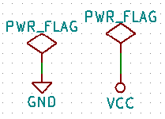AnmerkungDies verhindert eine klassische Fehlermeldung beim Prüfen des Schaltplans: Warning Pin power_in not driven (Net xx) -
Manchmal ist es eine gute Idee Kommentare in den Schaltplan zu schreiben. Um Kommentare hinzuzufügen benutzen Sie das Icon Text hinzufügen
 in der rechten Toolbar.
in der rechten Toolbar.
-
Nun benötigen alle Bauteile eine eindeutige Identifikation. Aktuell sind alle Komponenten immer noch R? oder J? benannt. Eine Identifikationszuweisung kann automatisch erfolgen indem das Icon Annotation im Schaltplan durchführen
 in der oberen Toolbar
angeklickt wird.
in der oberen Toolbar
angeklickt wird.
-
Im Fenster Annotation des Schaltplans wählen Sie Auf alle Schaltpläne anwenden (Anwendungsbereich) aus und betätigen den Button Annotation. Bestätigen Sie die Rückfrage mit OK. Nun sind alle Stellen im Schaltplan mit ? mit Zahlen ersetzt worden. Jedes Bauteil hat nun eine eindeutige Identifikation. In unserem Beispiel sind diese nun mit R1, R2, U1, D1 und J1 bezeichnet.
-
Prüfen wir nun unseren Schaltplan auf Fehler. Klicken Sie dazu auf das Icon Electrical Rules Check durchführen . Im erscheinenden Fester klicken Sie auf den Start Button. Ein Bericht wird erstellt und informiert Sie über Fehler und Warnungen wie z.B. nicht verbundene Pins oder Signale. Sie sollten Null Fehler und Null Warnungen angezeigt bekommen. Wenn ein Fehler oder eine Warnung festgestellt worden ist wird ein kleiner grüner Pfeil im Schaltplan die Stelle zeigen, an der der Fehler oder die Warnung lokalisiert worden ist. Aktivieren Sie die Checkbox ERC Protokolldatei erstellen und führen Sie den Test erneut durch, es wird nun eine *.erc Datei erstellt, abgespeichert und geöffnet in der weitere Information über die Fehler/Warnungen stehen.
AnmerkungWenn Sie eine Warnung erhalten 'Keine Einstellungen für Editor gefunden. Bitte einen vorgeben." stellen Sie bitte unter Windows c:\windows\notepad.exe ein bzw. unter Linux z.B. /usr/bin/gedit (Gnome) oder auch /usr/bin/kwrite (KDE). -
Der Schaltplan ist nun fertig gestellt. Wir können nun eine Netzliste erstellen zu der wir später die Footprints für jedes Bauteil hinzufügen. Klicken Sie auf das Icon Netzliste erstellen
 in der oberen Toolbar. Klicken
Sie auf Erstellen und im sich öffnenden Dateidialog auf den Button
Speichern. Speichern Sie die Datei mit dem voreingestellten Dateinamen.
in der oberen Toolbar. Klicken
Sie auf Erstellen und im sich öffnenden Dateidialog auf den Button
Speichern. Speichern Sie die Datei mit dem voreingestellten Dateinamen.
-
Nach dem Erstellen der Datei mit der Netzliste klicken Sie auf das Icon Starte CvPcb 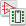 in der oberen Toolbar. Sollte es zu einer Fehlermeldung über eine fehlende Datei kommen ignorieren Sie dies bitte und betätigen den OK Button.
-
CvPcb erlaubt es Ihnen alle Bauteile aus dem Schaltplan mit den Footprints aus der KiCad Bibliothek zu verbinden. Das Auswahlfenster in der Mitte zeigt alle Bauteile die Sie in Ihrem Schaltplan verwenden. Wählen Sie hier in der Liste den Eintrag mit der Bauteil Identifikation D1. Im rechten Auswahlfenster sind alle verfügbaren Footprints, scrollen Sie zum Eintrag LEDs:LED-5MM und klicken Sie doppelt auf diesen.
-
Es ist möglich das im rechten Fenster nur Footprints einer ausgewählten Untergruppe sichtbar sind. Dies kann vorkommen wenn Kicad versucht eine Teilmenge von möglichen passenden Footprints zusammenzustellen. Klicken Sie auf die Icons
 ,
,
 und
und
 um
diese Filterfunktion ein oder auszuschalten.
um
diese Filterfunktion ein oder auszuschalten.
-
Für IC1 wählen Sie den Housings_DIP:DIP-8_W7.62mm Footprint. Für J1 wählen Sie den Footprint Connect:Banana_Jack_3Pin. Für R1 und R2 wählen Sie den Discret:R1 Footprint.
-
Wenn Sie wissen wollen wie der Footprint aussieht den auswählen haben Sie zwei Möglichkeiten. Sie können auf das Icon Ausgwählten Footprint anschauen
 klicken
um eine Vorschau des aktuellen Footprints zu erhalten. Als Alternative
können Sie auf das Icon Dokumentation des Footprints anzeigen
klicken
um eine Vorschau des aktuellen Footprints zu erhalten. Als Alternative
können Sie auf das Icon Dokumentation des Footprints anzeigen
 klicken und Sie werden ein
mehrseitiges PDF Dokument mit allen möglichen Footprints angezeigt
bekommen. Sie können sich dieses Dokument ausdrucken und ihre Bauteile auf
passende Dimensionen prüfen.
klicken und Sie werden ein
mehrseitiges PDF Dokument mit allen möglichen Footprints angezeigt
bekommen. Sie können sich dieses Dokument ausdrucken und ihre Bauteile auf
passende Dimensionen prüfen.
-
Sie sind fertig. Sie können nun ihre Netzlistendatei mit allen zugeordneten Footprints aktualisieren. Klicken Sie auf Datei → Speichern unter. Der vorgegebene Dateiname tutorial1.net ist in Ordnung, klicken Sie auf Speichern. Sie können auch auf das Icon Speichern
 klicken. Ihre Netzlistendatei ist mit
den Footprints aktualisiert. Beachten Sie das alle fehlende Footprints von
Bauteilen von Ihnen erstellt werden müssen, sofern diese nicht in einer
Bibliothek vorhanden sind. Dies wird später in einer eigenen Sektion
erklärt.
klicken. Ihre Netzlistendatei ist mit
den Footprints aktualisiert. Beachten Sie das alle fehlende Footprints von
Bauteilen von Ihnen erstellt werden müssen, sofern diese nicht in einer
Bibliothek vorhanden sind. Dies wird später in einer eigenen Sektion
erklärt.
-
CvPCB kann jetzt geschlossen werden. Gehen Sie zurück zu zum Eeschema Schaltplaneditor. Speichern Sie das Projekt durch Datei → Aktuellen Schaltplan speichern. Schließen Sie den Schaltplaneditor.
-
Wechseln Sie zum KiCad Projektmanager.
-
Die Netzlistendatei beschreibt alle Bauteile und deren zugehörigen Pin Verbindungen. Die Netzlistendatei ist aktuell eine Textdatei welche Sie sich einfach anschauen, verändern oder skripten können.
AnmerkungBibliotheksdateien (*.lib) sind auch Textdateien und sind ebenso einfach veränderbar oder skriptfähig. -
Um eine Stückliste zu erstellen, oft auch BOM genannt - Bill of Material, gehen Sie in den Eeschema Schaltplaneditor und Klicken auf das Stückliste und/oder Querbezüge Icon
 in der oberen
Toolbar. In der Standardeinstellung ist kein Plugin aktiv. Sie fügen eines
hinzu durch Klicken auf den Button Plugin hinzufügen. Wählen Sie die *.xsl
Datei die Sie benutzen möchten, in diesem Fall wählen wir bom2csv.xsl.
Anmerkung
in der oberen
Toolbar. In der Standardeinstellung ist kein Plugin aktiv. Sie fügen eines
hinzu durch Klicken auf den Button Plugin hinzufügen. Wählen Sie die *.xsl
Datei die Sie benutzen möchten, in diesem Fall wählen wir bom2csv.xsl.
AnmerkungDie *.xsl Datein sind im plugins Ordner der KiCad Installation zu finden, dieser befindet sich in /usr/lib/kicad/plugins/.
Oder holen die Datei von:
wget https://raw.githubusercontent.com/KiCad/kicad-source-mirror/master/eeschema/plugins/bom2csv.xsl
Kicad erstellt den Programmaufruf automatisch, zum Beispiel:xsltproc -o "%O" "/home/<user>/kicad/eeschema/plugins/bom2csv.xsl" "%I"
Wenn Sie die Erweiterung hinzufügen wollen dann verändern Sie das Kommando zu:xsltproc -o "%O.csv" "/home/<user>/kicad/eeschema/plugins/bom2csv.xsl" "%I"
Benutzen Sie den Hilfe Button für mehr Information.
-
Klicken Sie nun auf Erstellen. Die Datei die erstellt wird (mit dem gleichen Namen wie das Projekt) wird im Projektordner abgespeichert. Öffnen Sie die *.csv Datei mit LibreOffice oder auch Excel.
Sie können nun die Erstellung des PCB Layouts beginnen, dies wird in der nächsten Sektion erklärt. Aber zuvor schauen wir uns noch schnell an wie man Bauteilpins mit Bus Linien verbindet.
3.2. Bus Verbindungen in KiCad
Manchmal müssen Sie einige aufeinander folgende Pins von Bauteil A mit aufeinander folgenden Pins am Bauteil B verbinden. Dazu gibt es zwei Möglichkeiten, entweder Sie benutzen Bezeichner (Labels), welche wir schon kennen gelernt haben, oder man benutzt Bus Verbindungen. Folgend ein paar Informationen wie man dies umsetzt.
-
Wir nehmen an das wir drei Verbinder haben an denen jeweils 4 Pins zu den anderen Verbindern 1:1 verbunden werden müssen. Benutzen Sie die Bezeichnungsoption (betätigen Sie die Taste l) um dem Pin 4 am Bauteil P4 zu labeln. Benennen Sie den Bezeichner a1. Nun betätigen Sie die Taste Einfg um ein weiteren Bezeichner automatisch an den nächsten unten liegenden Pin unter Pin 4 (Pin 3) hinzuzufügen. Beachten Sie wie dieser Bezeichner automatisch a2 benannt wird.
-
Betätigen Sie die Einfg Taste ein zweites Mal. Die Einfg Taste entspricht der Wiederhole letzten Vorgang Aktion und ist ein sehr hilfreiches Kommando welches das Arbeiten in KiCad sehr erleichtert.
-
Wiederholen Sie das Bezeichnen für die zwei anderen Verbinder CONN_2 und CONN_3, danach ist alles fertig. Wenn Sie mit dem PCB Layout beginnen werden Sie sehen, dass alle drei Verbinder miteinander verbunden sind. Figur 2 zeigt das Ergebnis von dem was geschildert worden ist. Ebenfalls gebräuchlich ist die Benutzung einer Serie von Elektr. Verbindung an Buseingang führen unter Benutzung des Icons
 und
und
 ,
wie in Figur 3 gezeigt. Aber bedenken Sie, das hat keinen Effekt auf die
Leiterplatte.
,
wie in Figur 3 gezeigt. Aber bedenken Sie, das hat keinen Effekt auf die
Leiterplatte.
-
Es sei noch darauf hingewiesen das die kurzen Verbindungen an den Pins in Figur 2 nicht unbedingt nötig sind. Es ist statt dessen möglich die Bezeichner direkt auf die Pins anzuwenden.
-
Wir nehmen nun an es gibt einen weiteren vierten Verbinder der mit CONN_4 benannt ist. Und, aus welchem Grund auch immer, das Bezeichnen muss geringfügig anders erfolgen (b1, b2, b3, b4). Nun möchten wir Bus a mit Bus b mit den Pins 1:1 verbinden. Wir möchten dies ohne Pin Bezeichner erledigen (was auch möglich ist), statt dessen wird die Bus Verbindung bezeichnet mit einer Bezeichnung pro Bus.
-
Verbinden und Bezeichnen Sie CONN_4 wie zuvor erklärt nach der Bezeichnungsmethode. Benennen Sie die Pins b1, b2, b3 und b4. Verbinden Sie die Pins zu einer Serie Elektr. Verbindung an Buseingang führen durch das Icon
und mit einer Bus
Verbindung unter Benutzung des Icons
 . Siehe Figur 4.
. Siehe Figur 4.
-
Setzen Sie einen Bezeichner (benutzen Sie die Taste l) auf den Bus von CONN_4 und benennen diesen b[1..4].
-
Setzen Sie einen Bezeichner (benutzen Sie die Taste l) auf den vorherigen Bus und benennen diesen a[1..4].
-
Was wir nun tun können ist den Bus a[1..4] mit dem Bus b[1..4] mit einer Busverbindung durch den Button
zu verbinden.
-
Wenn die beiden Busse verbunden werden dann wird Pin a1 automatisch mit Pin b1, a2 mit b2 und so weiter verbunden. Figur 4 zeigt wie das finale Ergebnis aussieht.
AnmerkungDie Funktion Wiederhole letzten Vorgang durch die Einfg Taste kann hier wieder benutzt werden um die periodischen Einfügungen zu tätigen. Zum Beispiel, die kurzen Verbindungen zu allen Pins in Figur 2, Figur 3 und Figur 4 wurden mit dieser Funktion erstellt. -
Die Funktion Wiederhole letzten Vorgang durch die Einfg Taste wurde ebenfalls mehrfach benutzt um die verschiedenen Serien Elektr. Verbindung an Buseingang führen mit Hilfe des Buttons
.
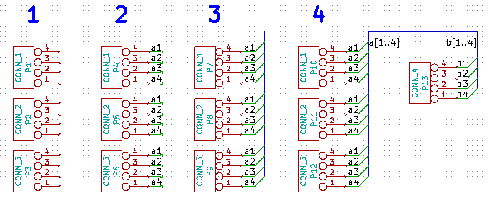
4. Gedruckte Schaltungen (Leiterplatten) entwerfen
Es ist an der Zeit die Netzlistendatei zu benutzen um eine Leiterplatte (PCB; Printed Ciruit Board) zu erstellen. Dies wird mit dem Pcbnew Tool durch geführt.
4.1. Benutzung von Pcbnew
-
Im KiCad Projektmanager klicken Sie auf das Pcbnew Icon
 . Das Fenster von Pcbnew wird
sich öffnen. Wenn Sie eine Fehlermeldung erhalten die besagt, dass die
*.kicad_pcb Datei nicht vorhanden ist und fragt ob Sie diese erstellen
wollen klicken Sie auf den Button Ja.
. Das Fenster von Pcbnew wird
sich öffnen. Wenn Sie eine Fehlermeldung erhalten die besagt, dass die
*.kicad_pcb Datei nicht vorhanden ist und fragt ob Sie diese erstellen
wollen klicken Sie auf den Button Ja.
-
Starten Sie mit der Eingabe einiger Informationen über die Schaltung. Klicken Sie auf das Icon Einstellungen für Seitengröße und dargestellte Texte
in der
oberen Toolbar. Setzen Sie die Papiergröße auf A4 und den Titel auf
Tutorial1.
-
Es ist eine gute Idee vor dem Arbeiten am Layout der Platine zuerst das Abstandsmaß und den Minimalwert Leiterbahnbreite einzustellen welches Ihr PCB Servicepartner verarbeiten kann. Allgemein gültig können Sie das Abstandsmaß und den Minimalwert der Leiterbahnbreite auf 0,25 einstellen. Klicken Sie auf Design Regeln → Design Regeln im Menü. Wenn nicht nicht schon geöffnet klicken Sie auf den Reiter Netzklasseneditor. Ändern Sie das Abstandsmaß und die Leiterbahnbreite jeweils auf 0,25 wie gezeigt. Die Werte sind in Millimeter.
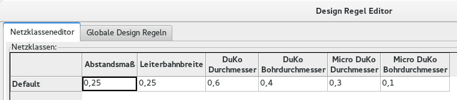 -
Klicken Sie auf den Reiter Globale Design Regeln und setzen Minimalwert Leiterbahnbreite auf 0,25. Bestätigen Sie mit dem OK Button Ihre Veränderungen und schließen Sie den Design Regel Editor.
-
Wir importieren nun die Netzlistendatei. Klicken Sie dazu auf das Icon Netzliste einlesen
in der
oberen Toolbar. Klicken Sie auf Durchsuchen, wählen Sie tutorial1.net im
Dateidialog aus und klicken dann auf Aktuelle Netzliste einlesen. Fehler
sollten nicht auftreten, klicken Sie auf den Button Schließen.
-
Alle Bauteile sollten nun in der Mitte sichtbar sein, zoomen Sie in die Arbeitsebene um mehr Details zu sehen.
-
Ziehen Sie mit der Maus einen Rahmen um alle Bauteile, dies selektiert alle Bauteile. Verschieben Sie die ausgewählten Komponenten wenn nötig.
-
Alle Bauteile sind mit verschiedenen dünnen Linien verbunden die Netzlinien genannt werden. Stellen Sie sicher das das Icon Netzlinien der Platine aktiviert ist. Dadurch sind die Netzlinien sichtbar die die Bauteile verbinden.
AnmerkungDer Button muss aktiviert sein um die Netzlinien sichtbar zu machen. -
Sie können die Bauteile ziehen indem Sie die Maus auf das Bauteil bewegen und dann die Taste g betätigen. Klicken Sie an der Stelle wo das Bauteil platziert werden soll. Verteilen Sie die Bauteile und minimieren die Kreuzungen der Netzlinien soweit möglich.
AnmerkungSie können Bauteile natürlich auch verschieben (unter Benutzung der Taste m) statt diese zu ziehen (Taste g), allerdings verlieren die Bauteile etwaige schon vorhandene Leiterbahnverbindungen (als Erinnerung, das selbe passiert auch in Eeschema). Also, benutzen Sie immer die Ziehen Funktion mit der Taste g. 
-
Wenn die Netzlinien verschwinden oder der Bildschirm sehr unübersichtlich/chaotisch wird betätigen Sie die rechte Maustaste und klicken dann auf Ansicht aktualisieren. Schauen Sie sich an wie der Pin vom 100Ohm Resistor mit dem Pin 6 vom PIC verbunden ist. Dies ist das Ergebnis der Bezeichner Methode aus dem vorherigen Abschnitt. Bezeichner sind eine bevorzugte Methode für Verbindungen da diese einen Schaltplan übersichtlich halten.
-
Wir werden nun die Außenkanten der Platine definieren. Aktivieren/selektieren Sie Edge.Cuts in der Lagenauswahl auf der rechten Seite. Klicken Sie auf das Icon Grafische Linie oder Polygon hinzufügen
 in
der rechten Toolbar. Markieren Sie die Außenkanten der Leiterplatte indem
Sie die Eckpunkte der Platine durch Klicken festlegen. Beachten Sie bitte,
dass Sie einen kleinen Mindestabstand zwischen den Footprints der Bauteile
und der Umrisslinie der Außenkante vorhalten müssen.
in
der rechten Toolbar. Markieren Sie die Außenkanten der Leiterplatte indem
Sie die Eckpunkte der Platine durch Klicken festlegen. Beachten Sie bitte,
dass Sie einen kleinen Mindestabstand zwischen den Footprints der Bauteile
und der Umrisslinie der Außenkante vorhalten müssen.
-
Verbinden Sie alle Bauteile miteinander außer dem Netz GND. Wir werden später alle GND Verbindungen in einem Schritt erstellen in dem wir einen ausgefüllten Flächenbereich auf der unteren Lage (B.Cu → Bottom Copper genannt) erstellen.
-
Wie müssen nun die Kupfer Lage auswählen auf der wir arbeiten wollen. Wählen Sie F.Cu (PgUp) im Auswahlmenü der oberen Toolbar. Das ist die Front Top Kupfer Lage, also die Lage der Platinen Vorderseite auf die Sie direkt schauen.
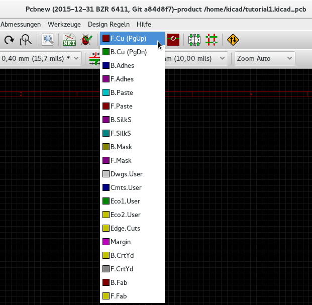 -
Wenn Sie sich z.B. entscheiden eine Platine mit vier Lagen benutzen zu wollen, gehen Sie zu Design Regeln → Lagen einrichten und ändern Kupferlagen auf den Wert 4. In der Tabelle der Lagen können Sie den Benutzungstyp der Lagen festlegen. Bedenken Sie das es sehr sinnvolle Voreinstellungen in der Auswahl Voreinstellung für Lagengruppierungen gibt.
-
Klicken Sie auf das Icon Leiterbahnen und Durchkontaktierungen hinzufügen
 in der rechten
Toolbar. Klicken Sie auf Pin 1 von J1 und verlegen Sie einen Leiterzug zum
Pad R2. Klicken Sie doppelt an der Stelle wo der Leiterzug enden soll. Die
Breite der Leiterbahn ist 0,250mm gemäß der Standardvorgabe. Diese Breite
kann über das Drop-Down Menü in der oberen Toolbar geändert werden. In der
Standardeinstellung ist jedoch meistens nur eine voreingestellte Breite
hinterlegt.
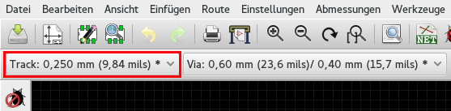
in der rechten
Toolbar. Klicken Sie auf Pin 1 von J1 und verlegen Sie einen Leiterzug zum
Pad R2. Klicken Sie doppelt an der Stelle wo der Leiterzug enden soll. Die
Breite der Leiterbahn ist 0,250mm gemäß der Standardvorgabe. Diese Breite
kann über das Drop-Down Menü in der oberen Toolbar geändert werden. In der
Standardeinstellung ist jedoch meistens nur eine voreingestellte Breite
hinterlegt.
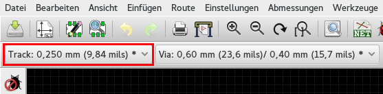 -
Wenn Sie weitere Leiterbahnbreiten einstellen wollen gehen Sie zu Design Regeln → Design Regeln → Reiter Globale Design Regeln und fügen im rechten unteren Fenster Benutzerdefinierte Leiterbahnbreiten die Leiterbahnbreiten hinzu die Sie benötigen. Sie können danach diese Leiterbahnbreiten aus dem Drop-Down Menü auswählen. Sehen Sie folgendes Beispiel (Maße sind in mm).
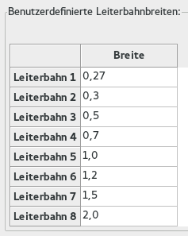 -
Alternativ kann man Netzklassen benutzen, für diese lassen sich mehrere Optionen einstellen. Gehen Sie dazu in Design Regeln → Design Regeln → Reiter Netzklasseneditor und fügen eine neue Klasse power genannt hinzu. Ändern Sie die Leiterbahnbreite von 0,25mm zu 0,61mm (24mil). Fügen Sie alle Klassen außer Ground zur power Klasse hinzu (wählen Sie Zugehörigkeit Default auf der linken Seite und Zugehörigkeit power auf der rechten Seite aus, markieren Sie die Netze auf der linken Seite aus und benutzen Sie die Pfeil Buttons um die Zugehörigkeit zu übertragen)
-
Wenn Sie die Rastergröße verändern wollen, Rechts Klick → Rasterauswahl. Versichern Sie sich ein passendes Raster ausgewählt zu haben bevor Sie beginnen die Bauteile zu platzieren und/oder Leiterbahnen zu verlegen.
-
Wiederholen Sie diesen Prozess bis alle Verbindungen, außer Pin 3 von J1, verlegt sind. Ihr Board sollte aussehen wie im folgenden Beispiel.

-
Wir werden nun eine Leiterbahn auf der unteren Seite der Leiterplatte verlegen. Wählen Sie B.Cu im Drop-Down Menü in der oberen Toolbar. Klicken Sie auf das Icon Leiterbahnen und Durchkontaktierungen hinzufügen
. Verlegen Sie eine
Verbindung zwischen J1 Pin 3 und U1 Pin 8. Dies ist letztendlich nicht
unbedingt nötig da wir später einen ausgefüllten Flächenbereich erstellen
werden, beachten Sie jedoch das die Farbe für die verlegte Leiterbahn sich
verändert hat.
-
Es ist auch möglich die Lage beim Verlegen einer Leiterbahn mit Hilfe einer Durchkontaktierung (DoKu, auch Via genannt) zu wechseln. Wenn Sie eine Leiterbahn auf der oberen Kupfer Lage verlegen können Sie nach einem Rechtsklick Durchgehende DoKu platzieren auswählen, oder auch die Taste v betätigen, um eine Durchkontaktierung einzufügen. Dies erstellt eine Durchkontaktierung auf die untere Kupfer Lage und führt die Leiterbahnverlegung auf der Unterseite fort.
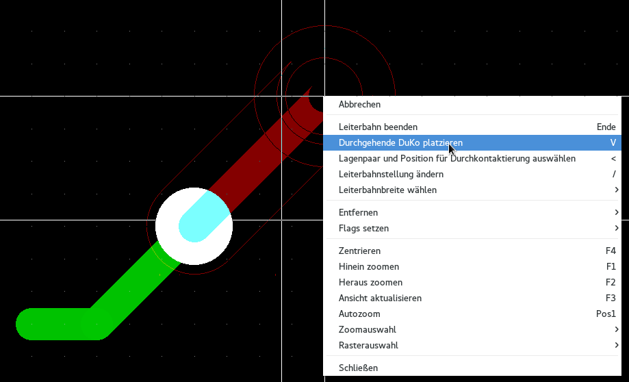 -
Wenn Sie eine spezielle Verbindung nachverfolgen wollen dann können Sie auf das Icon Netz hervorheben
 in der rechten
Toolbar klicken. Klicken Sie auf Pin 3 von J1. Der Leiterzug selber als auch
alle Pads die verbunden sind werden hervorgehoben.
in der rechten
Toolbar klicken. Klicken Sie auf Pin 3 von J1. Der Leiterzug selber als auch
alle Pads die verbunden sind werden hervorgehoben.
-
Wir erstellen nun einen ausgefüllten Flächenbereich der alle GND Pins verbindet. Klicken Sie auf das Icon Gefüllte Fläche hinzufügen
 in der rechten Toolbar. Wir
ziehen eine rechteckige Fläche um das Board, starten Sie daher in einer der
Ecken vom Board. Im Dialog der sich öffnet setzen Sie die Padverbindung
auf Thermische Abführung [Alle] und klicken auf OK.
in der rechten Toolbar. Wir
ziehen eine rechteckige Fläche um das Board, starten Sie daher in einer der
Ecken vom Board. Im Dialog der sich öffnet setzen Sie die Padverbindung
auf Thermische Abführung [Alle] und klicken auf OK.
-
Führen Sie die Außenkanten der Füllfläche an den Außenlinien des Boards entlang indem Sie die vier Eckpunkte in einer Rotationsrichtung ansteuern. Führen Sie einen Doppelklick aus wenn Sie das Rechteck vollständig umfahren haben. Danach führen Sie einen Rechts Klick innerhalb der Fläche aus die Sie umfahren haben. Wählen Sie den Menüpunkt Alle Flächen (erneut) ausfüllen. Das Board sollte sich nun grün füllen und ungefähr so aussehen:
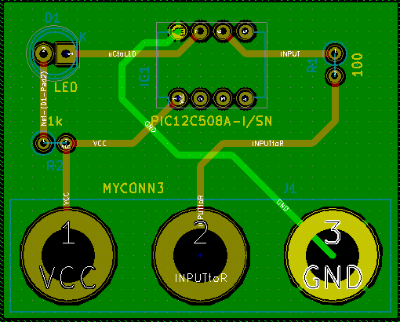 -
Starten Sie den Design Rules Check durch das Icon Design Rules Check ausführen
 in der oberen
Toolbar. Klicken Sie auf DRC ausführen. Es sollten keine Fehler gemeldet
werden. Klicken Sie nun auf Verbindungslose Elemente auflisten. Auch hier
sollten keine Fehler auftreten. Klicken Sie auf OK um das Fenster DRC
Steuerung zu schließen.
in der oberen
Toolbar. Klicken Sie auf DRC ausführen. Es sollten keine Fehler gemeldet
werden. Klicken Sie nun auf Verbindungslose Elemente auflisten. Auch hier
sollten keine Fehler auftreten. Klicken Sie auf OK um das Fenster DRC
Steuerung zu schließen.
-
Speichern Sie Ihre Datei durch klicken auf Datei → Speichern. Um Ihr Board in 3D zu betrachten klicken Sie auf Ansicht → 3D Viewer.

-
Benutzen Sie die Maus um die Platine zu rotieren.
-
Ihre Leiterplatte ist nun fertig. Um die Platine fertigen lassen zu können müssen Sie noch Gerber Dateien von Ihrer Platine erstellen.
4.2. Erstellung von Gerber Dateien
Wenn Sie das Erstellen der Leiterplatte abgeschlossen haben können Sie Gerber Dateien für jede Lage erstellen und zu Ihren favorisierten PCB Hersteller schicken, der die Leiterplatte dann für Sie produzieren kann.
-
Im KiCad Projekt Manager öffnen Sie das Pcbnew Software Tool durch Anklicken des Icons
und laden
damit Ihre Leiterplattendatei.
-
Klicken Sie auf Datei → Plotten. Wählen Sie Gerber als Plotformat und wählen das Ausgabeverzeichnis in dem die Gerber Dateien abgespeichert werden sollen. Starten Sie die Ausgabe durch Klicken des Plotten Button.
-
Dies sind die Lagen die Sie selektieren müssen um eine typische 2-lagige Leiterplatte zu erstellen:
| Lage | KiCad Lagen Name | Alter KiCad Lagen Name | Default Gerber Extension | "Verwende geeignete Endung für Dateinamen" ist aktiviert |
|---|---|---|---|---|
Bottom Layer |
B.Cu |
Kupfer |
.GBR |
.GBL |
Top Layer |
F.Cu |
Komponente |
.GBR |
.GTL |
Top Overlay |
F.SilkS |
SilkS_Cmp |
.GBR |
.GTO |
Bottom Solder Resist |
B.Mask |
Mask_Cop |
.GBR |
.GBS |
Top Solder Resist |
F.Mask |
Mask_Cmp |
.GBR |
.GTS |
Edges |
Edge.Cuts |
Edges_Pcb |
.GBR |
.GM1 |
4.3. Benutzen von GerbView
-
Um alle erzeugten Gerber Dateien anzuschauen klicken Sie im KiCad Projektmanager auf das Icon GerbView. Im linken Auswahlmenü der oberen Toolbar wählen Sie Lage 1. Öffnen Sie eine Gerber Datei durch Datei → Gerberdatei öffnen oder Klicken auf das Icon neue Gerberdatei öffnen
 . Selektieren Sie alle
generierten Gerber Dateien und öffnen diese dann. Beachten Sie das alle
Lagen übereinander gelegt dargestellt werden.
. Selektieren Sie alle
generierten Gerber Dateien und öffnen diese dann. Beachten Sie das alle
Lagen übereinander gelegt dargestellt werden.
-
Wählen Sie im rechten Menü die Lagen aus die Sie betrachten wollen. Kontrollieren Sie jede Lage sorgfältig bevor Sie Ihre Platine in eine Produktion geben.
-
Um eine Bohrdatei zu erstellen gehen Sie wieder in Pcbnew und wählen wieder Datei → Plotten. Die Standard Einstellungen sind in Ordnung, klicken Sie auf den Button Bohrdatei generieren.
4.4. Automatisches Routen mit FreeRouter
Ein Board manuell zu Routen macht Spaß und geht in der Regel auch schnell. Für ein Board mit vielen Bauteilen möchte man aber Leiterbahnen automatisch Routen lassen. Sie sollten kritische Leiterbahnen manuell verlegen bevor Sie die langweiligen Teile den Autorouter erledigen lassen. Der Autorouter wird nur unverlegte Leiterzüge bearbeiten. Den Autorouter den wir benutzen ist FreeRouter von freerouting.net.
|
Anmerkung
|
FreeRouter ist eine Open Source Java Applikation und muss durch Sie erst gebaut werden um ihn mit KiCad benutzen zu können. Der Source Code von Freerouter kann auf der Webseite https://github.com/nikropht/FreeRouting herunter geladen werden. |
-
Innerhalb von Pcbnew klicken Sie auf Datei → Export → Specctra DSN oder auf Werkzeuge → Freeroute → Exportiere eine Spectra Design Datei (*.dsn) und speichern die Datei lokal. Öffnen Sie Freerouter und klicken auf den Button Open Your Own Design und wählen die dsn Datei und laden diese.
AnmerkungDer Dialog Werkzeuge → FreeRoute hat einen Hilfe Button der eine kleine Hilfedatei FreeRoute Hilfe öffnet. Folgen Sie diesen Schritten um FreeRoute effektiv nutzen zu können. -
FreeRoute besitzt Features die KiCad aktuell noch nicht unterstützt, für beide Arten des Routing; manuell oder automatisch. FreRouter arbeitet in zwei Schritten: Durchführung des Routings und danach die Optimierung des Routings. Eine komplette Optimierung kann eine sehr lange Zeit in Anspruch nehmen, dies können Sie aber zu jeder Zeit unterbrechen wenn nötig.
-
Sie können das automatische Routing starten indem Sie auf den Button Autorouter in der oberen Toolbar klicken. Die untere Leiste gibt Ihnen Informationen über den fortschreitenden Routing Prozess. Wenn die Anzahl von Pass über 30 geht wird der Autorouter das Board nicht weiter bearbeiten können. Ziehen Sie die Komponenten mehr auseinander oder verändern Sie die Lage durch Rotieren der Bauteile und starten das Autorouting neu. Durch Veränderung der Bauteilpositionen lassen sich meistens die Anzahl von Netzkreuzungen der einzelnen Netze verringern.
-
Ein Klick auf die linke Maustaste lässt das automatische Routing stoppen und beginnt den automatischen Optimierungsprozess.
-
Klicken Sie auf Datei → Export Specctra Session File und speichern die Datei mit der .ses Erweiterung. Die Freerouter Regel Dateien müssen Sie nicht speichern.
-
Zurück zu Pcbnew. Sie können das eben geroutete Board wieder zurück importieren durch Klicken auf Werkzeuge → FreeRoute und dort mit Klicken auf Specctra Session Datei (*.ses) rückimportieren und der Auswahl der zugehörigen .ses Datei.
Wenn es Leiterbahnen gibt die Ihnen nicht gefallen dann können Sie diese
löschen und neu verlegen, löschen Sie die Leiterbahn durch die Entf Taste
und rufen des Routing Tools Leiterbahnen und Durchkontaktierungen
hinzufügen
 in der rechten
Toolbar danach auf.
in der rechten
Toolbar danach auf.
5. Vorwärts Annotation in KiCad
Wenn Sie Ihren elektronischen Schaltplan vervollständigt, die Footprintzweisungen, das Boardlayout und die Gerber Dateien erstellt haben, dann können Sie alles zu einem Leiterplatten Hersteller schicken damit Ihr Board Realität werden kann.
Oft stellt sich heraus, dass dieser geradlinige Work Flow nicht so unidirektional ist. Zum Beispiel, wenn Sie Ihr Board verändern/erweitern wollen für das Sie den kompletten Arbeitsablauf schon durchschritten haben, dann ist es nötig Bauteile zu verschieben, diese gegen andere Bauteile zu tauschen, Footprints zu verändern und noch anderes mehr. Beim Durchführen dieser Modifikationen möchten Sie nicht das gesamte Board komplett neu Routen müssen. Statt dessen möchten Sie wohl folgendes tun:
-
Nehmen wir an Sie möchten den hypothetischen Verbinder CON1 mit CON2 tauschen.
-
Sie haben einen vollständigen Schaltplan und eine vollendete Leiterplatte.
-
Vom KiCad Projektmanager aus starten Sie Eeschema und führen die Veränderungen im Schaltplan durch, löschen Sie CON1 und fügen Sie CON2 hinzu. Speichern Sie den Schaltplan durch Klicken auf das Icon
und klicken Sie dann auf das Icon
Netzliste erstellen
in der
oberen Toolbar.
-
Speichern Sie die Netzliste unter dem vorgegebenen Dateinamen, Sie müssen die alte Datei überschreiben.
-
Weisen Sie nun CON2 einen Footprint zu. Klicken Sie auf das Icon Starte CvPcb in der oberen Toolbar. Weisen Sie dem neuem Bauteil CON2 einen Footprint hinzu. Die restlichen Bauteile haben alle noch eine gültige vorherige Footprint Zuweisung. Schließen Sie CvPvb.
-
Zurück im Schaltplan Editor, speichern Sie das Projekt durch aufrufen von Datei → Schaltplanprojekt speichern. Schließen Sie den Schaltplaneditor.
-
Klicken Sie im KiCad Projektmanager auf das Icon Pcbnew
. Das Fenster von Pcbnew öffnet
sich.
-
Das alte, schon geroutete Board sollte sich automatisch öffnen. Importieren Sie nun die neue Netzlistendatei. Klicken Sie auf das Icon Netzliste einlesen in der oberen Toolbar.
-
Klicken Sie auf den Button Durchsuchen, wählen Sie im Dateidialog die Netzlistendatei aus und klicken Sie auf auf Aktuelle Netzliste einlesen. Schließen Sie den Dialog.
-
An diesem Punkt sollten Sie das Leiterplatten Layout mit allen vorherigen schon platzierten Komponenten sehen. In der Nähe der vorhandenen Platine sehen Sie neue noch nicht geroutete Bauteile, in unserem Fall CON2. Selektieren Sie CON2 und verschieben Sie das Bauteil an den vorgesehenen Platz.
-
Platzieren Sie CON2 und erstellen die Leiterzüge. Wenn fertig dann speichern Sie und erstellen erneut die Gerber Dateien wie zuvor.
Der hier beschriebene Prozess kann einfach so oft wiederholt werden wie nötig. Zusätzlich zur hier beschriebenen Vorwärts Annotation gibt es noch eine andere Methode die als Rückwärts Annotation bekannt ist. Diese Methode erlaubt es Ihnen Veränderungen zuerst am Leiterplatten Design durchzuführen und diese dann zurück in den Schaltplan zu führen. Jedoch ist die Rückwärts Annotation nicht so zweckdienlich und deswegen nicht weiter hier beschrieben.
6. Erstellen von Bauteilen in Kicad
Es kommt manchmal vor, dass Bauteile die Sie im Schaltplan benutzen müssen die nicht in den KiCad Bibliotheken vorhanden sind. Dies ist nicht ungewöhnlich bei der sehr großen Anzahl an möglichen Bauteilen und kein Grund zur Sorge. In dieser Sektion werden wir sehen wie man ein neues Bauteil in KiCad schnell und einfach erstellen kann. Ungeachtet dessen, bedenken Sie auch, dass man KiCad Komponenten an vielen Stellen im Internet finden kann. Zum Beispiel von hier:
Ein Bauteil in KiCad ist eine Textdatei die mit DEF beginnt und und mit ENDDEF endet. Ein oder mehrere Bauteile sind üblicher Weise in einer Bibliothek mit der Erweiterung .lib enthalten. Wenn Sie Bauteile zu einer Bibliothek hinzufügen wollen dann können Sie einfach die Bauteil Daten kopieren und einfügen.
6.1. Benutzen des Bauteileditors
-
Wir können den Bibliothekseditor benutzen (Teil von Eeschema) um neue Bauteile zu erstellen. In unserem Projektordner tutorial1 erstellen wir einen Ordner library. In diesem Ordner speichern wir die neue Bibliothek myLib.lib ab sobald wir unser neues Bauteil kreiert haben.
-
Wir können nun beginnen eine neue Komponente zu erstellen. Im KiCad Projektmanager starten Sie Eeschema und dort öffnen Sie den Bibliothekseditor durch Anklicken des Icons
 . Dort beginnen Sie ein neues
Bauteil durch Anklicken des Icons
. Dort beginnen Sie ein neues
Bauteil durch Anklicken des Icons
 . Das Fenster
Bauteil Eigenschaften öffnet sich. Benennen Sie das Bauteil MYCONN3,
setzen den voreingestellten Referenzbezeichner auf J, die Anzahl der
Einheiten pro Paket setzen Sie auf 1. Klicken Sie auf den Button
OK. Sollte noch ein Warnhinweis auftreten dann bestätigen Sie diesen
einfach. An diesem Punkt besteht das Bauteil nur aus dessen Labeln. Lassen
Sie uns dem Bauteil ein paar Pins hinzufügen. Klicken Sie auf das Icon
. Das Fenster
Bauteil Eigenschaften öffnet sich. Benennen Sie das Bauteil MYCONN3,
setzen den voreingestellten Referenzbezeichner auf J, die Anzahl der
Einheiten pro Paket setzen Sie auf 1. Klicken Sie auf den Button
OK. Sollte noch ein Warnhinweis auftreten dann bestätigen Sie diesen
einfach. An diesem Punkt besteht das Bauteil nur aus dessen Labeln. Lassen
Sie uns dem Bauteil ein paar Pins hinzufügen. Klicken Sie auf das Icon
 Pins dem Bauteil hinzufügen in der
rechten Toolbar. Um einen Pin hinzu zufügen klicken Sie mit der linken
Maustaste unterhalb vom MYCONN3 Label.
Pins dem Bauteil hinzufügen in der
rechten Toolbar. Um einen Pin hinzu zufügen klicken Sie mit der linken
Maustaste unterhalb vom MYCONN3 Label.
-
Im Fenster der Pin Eigenschaften, welches erscheint, setzen Sie den Pin Namen auf VCC, die Pin Nummer auf 1 und den Elektrischer Typ auf Passiv und klicken auf OK.
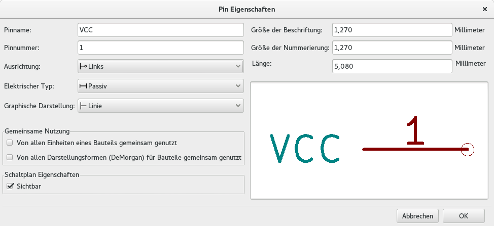 -
Platzieren Sie den Pin durch Klicken an der Stelle wo er gezeichnet werden soll, direkt unter dem Bezeichner MYCONN3.
-
Wiederholen Sie den Schritt, dieses mal mit dem Pinnamen INPUT, der Pinnummer 2, der Elektrischer Typ ist Passive.
-
Wiederholen Sie den Schritt ein drittes Mal, der Pinname soll nun GND sein, die Pinnummer ist 3, der Elektrischer Typ ist ebenfalls wieder Passive. Verteilen Sie die Pins gleichmäßig übereinander. Der Bauteil Bezeichner MYCONN3 sollte im mittig in der vertikalen Achse der Zeichnung liegen.
-
Als nächstes zeichnen Sie einen Umriss um das Bauteil. Klicken Sie dazu auf das Icon Rechteck hinzufügen
 . Wir wollen ein
Rechteck zeichnen was die Pins einschließt wie nachfolgend zu sehen. Um dies
zu erstellen klicken Sie zuerst die linke obere Ecke des Rechtecks an und
ziehen das Rechteck durch anfahren der unteren rechten Ecke auf. Klicken Sie
wieder wenn die untere rechte Ecke des Rechtecks erreicht ist.
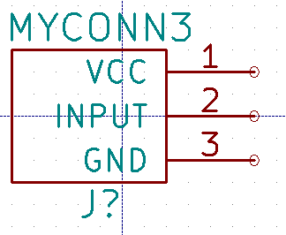
. Wir wollen ein
Rechteck zeichnen was die Pins einschließt wie nachfolgend zu sehen. Um dies
zu erstellen klicken Sie zuerst die linke obere Ecke des Rechtecks an und
ziehen das Rechteck durch anfahren der unteren rechten Ecke auf. Klicken Sie
wieder wenn die untere rechte Ecke des Rechtecks erreicht ist.
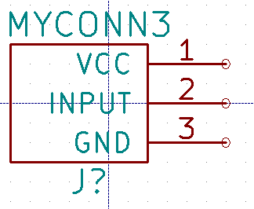 -
Wenn Sie das Rechteck mit der Farbe Gelb ausfüllen wollen öffnen Sie im Fenster Eeschema den Menüpunkt Einstellungen → Einstellungen des Schaltplaneditors den Reiter Farben und wählen in der Gruppe Komponente für Gehäusehintergrund zum Beispiel die Farbe Hellgelb.
-
Speichern Sie das Bauteil in Ihrer Bibliothek myLib.lib. Klicken Sie dazu auf das Icon Gegenwärtiges Bauteil in einer neuen Bibliothek speichern
 . Öffnen Sie
den zuvor erstellten Ordner tutorial1/library/ und speichern Sie die
Bibliothek unter dem Namen myLib.lib.
. Öffnen Sie
den zuvor erstellten Ordner tutorial1/library/ und speichern Sie die
Bibliothek unter dem Namen myLib.lib.
-
Öffnen Sie Einstellungen → Bauteil Bibliotheken und fügen Sie in Benutzerdefinierter Suchpfad den Ordner tutorial1/library/ hinzu und myLib.lib zu den Bauteilebibliotheksdateien.
-
Klicken Sie auf das Icon Arbeitsbibliothek auswählen
 . Im Auswahlfenster der Elemente
wählen Sie myLib und klicken auf OK. Beachten Sie das in der Fensterzeile
nun die aktuell gewählte Bibliothek angezeigt wird, es sollte dort nun
[/Pfad/zu]/myLib.lib zu lesen sein.
. Im Auswahlfenster der Elemente
wählen Sie myLib und klicken auf OK. Beachten Sie das in der Fensterzeile
nun die aktuell gewählte Bibliothek angezeigt wird, es sollte dort nun
[/Pfad/zu]/myLib.lib zu lesen sein.
-
Klicken Sie auf das Icon Gegenwärtiges Bauteil in aktueller Bibliothek aktualisieren
 in der oberen Toolbar. Speichern Sie alle neuen Änderungen durch anklicken
des Icons Aktuelle Bauteilbibliothek speichern
in der oberen Toolbar. Speichern Sie alle neuen Änderungen durch anklicken
des Icons Aktuelle Bauteilbibliothek speichern
 in der oberen
Toolbar. Bestätigen Sie die Rückfrage mit Ja. Das neue Bauteil ist nun
fertig und in der Bibliothek enthalten welche im Fenstertitel benannt ist.
in der oberen
Toolbar. Bestätigen Sie die Rückfrage mit Ja. Das neue Bauteil ist nun
fertig und in der Bibliothek enthalten welche im Fenstertitel benannt ist.
-
Sie können nun den Bauteilbibliothekseditor schließen. Sie werden wieder in den Schaltplaneditor zurück gelangen. Das neue Bauteil ist in der Bibliothek myLib auswählbar.
-
Sie können jede Bibliothek Datei.lib auswählbar machen indem Sie diese in den Bibliothekssuchpfad hinzufügen. In Eeschema öffnen Sie Einstellungen → Bauteil Bibliotheken und fügen Sie in Benutzerdefinierter Suchpfad den Ordner der Bibliothek hinzu und Datei.lib zu den Bauteilebibliotheksdateien.
6.2. Export, Import und Verändern von Bauteilkomponenten
Anstatt mit einer leeren neuen Bibliothek zu starten ist es meistens einfacher mit einer vorhandenen Bibliothek zu beginnen und diese zu verändern. In diesem Abschnitt werden wir sehen wie man ein Bauteil aus der Standard Bibliothek device in eine eigene Bibliothek exportiert und dann verändert.
-
Im KiCad Projektmanager, starten Sie Eeschema, klicken auf das Icon Bibliothekseditor - Bauteile erstellen oder bearbeiten
, klicken Sie auf das Icon
Arbeitsbibliothek wählen
und
wählen die Bibliothek device. Klicken Sie nun auf das Icon Bauteil aus
der gegenwärtigen Bibliothek laden
 und
importieren RELAY_2RT.
und
importieren RELAY_2RT.
-
Klicken Sie auf das Icon Bauteil exportieren
 , navigieren in den Ordner
library/ und speichern die neue Bibliothek unter dem Namen myOwnLib.lib.
, navigieren in den Ordner
library/ und speichern die neue Bibliothek unter dem Namen myOwnLib.lib.
-
Sie können dieses Bauteil und die komplette Bibliothek myOwnLib.lib benutzen indem Sie diese zum Bibliothekspfad hinzufügen. In Eeschema gehen Sie zu Einstellungen → Bauteil Bibliotheken und fügen Sie in Benutzerdefinierter Suchpfad den Ordner der Bibliothek hinzu und myOwnLib.lib zu den Bauteilebibliotheksdateien.
-
Klicken Sie auf das Icon Arbeitsbibliothek auswählen
. Im Auswahlfenster der Elemente
wählen Sie myOwnLib und klicken auf OK. Beachten Sie das in der
Fensterzeile nun die aktuell gewählte Bibliothek angezeigt wird, es sollte
dort nun [/Pfad/zu]/myOwnLib.lib zu lesen sein.
-
Klicken Sie auf das Icon Bibliothekseditor - Bauteile erstellen oder bearbeiten
und
importieren RELAY_2RT.
-
Sie können nun das Bauteil gemäß Ihren Vorstellungen verändern. Bewegen Sie den Mauszeiger über den Bezeichner RELAY_2RT, betätigen Sie die Taste e und benennen diesen in MY_RELAY_2RT um.
-
Klicken Sie auf das Icon Gegenwärtiges Bauteil in aktueller Bibliothek aktualisieren
in der oberen Toolbar. Speichern Sie alle neuen Änderungen durch anklicken
des Icons Aktuelle Bauteilbibliothek speichern
in der oberen Toolbar.
6.3. Erstellen von Schaltplansymbolen mit quicklib
In dieser Sektion wird ein alternativer Weg zum Erstellen des Schaltplansymbols für MYCONN3 (siehe MYCONN3 weiter oben) unter Benutzung des Internet Tools quicklab gezeigt.
-
Öffnen Sie die quicklab Webseite: http://kicad.rohrbacher.net/quicklib.php
-
Fügen Sie folgende Informationen in die Felder ein: Component name: MYCONN3 Reference Prefix: J Pin Layout Style: SIL Pin Count, N: 3
-
Klicken Sie auf den Assign Pins Button. Fügen Sie folgende Informationen in die Felder ein: Pin 1: VCC Pin 2: Input Pin 3: GND. Type: Passive für alle drei Pins.
-
Klicken Sie auf das Icon Preview und, wenn Sie zufrieden sind, klicken Sie auf Build Library Component. Laden Sie die Datei herunter und speichern Sie diese unter tutorial1/library/myQuickLib.lib.. Sie sind fertig!
-
Betrachten Sie das Ergebnis in KiCad. Im KiCad Projektmanager, starten Sie Eeschema, klicken auf das Icon Bibliothekseditor - Bauteile erstellen oder bearbeiten
, klicken nun
auf das Icon Bauteil importieren
 und öffnen den Ordner tutorial1/library/ und öffnen myQuickLib.lib.
und öffnen den Ordner tutorial1/library/ und öffnen myQuickLib.lib.

-
Sie können dieses Bauteil und die gesamte Bibliothek myQuickLib.lib auswählbar machen indem Sie diese in den KiCad Bibliothekssuchpfad hinzufügen. In Eeschema öffnen Sie Einstellungen → Bauteil Bibliotheken und fügen Sie in Benutzerdefinierter Suchpfad den Ordner library hinzu und myQuickLib.lib zu den Bauteilebibliotheksdateien.
Wie Sie sich vorstellen können kann diese Methode eine Bauteilbibliothek zu erstellen sehr effektiv sein wenn Sie Bauteile mit einer hohen Pin Anzahl erstellen wollen.
6.4. Erstellen eines Bauteils mit zahlreichen Pins
Im Abschnitt Erstellen von Schaltplansymbolen mit quicklib haben wir gesehen wie man Schaltplansymbole mit quicklib, einem Web basierten Tool, erstellen kann. Vereinzelt besteht die Notwendigkeit Schaltplansymbole mit einer sehr hohen Anzahl an Pins (mehrere hundert) zu erstellen. Dies ist keine besonders schwierige Aufgabe in KiCad.
-
Stellen Sie sich vor Sie möchten ein Bauteil mit 50 Pins erstellen. Es ist eine übliche Praxis diese aus mehrfachen Zeichnungen mit kleinerer Pin Anzahl zu erstellen, zum Beispiel zwei Zeichnungen mit jeweils 25 Pins. Diese Komponentendarstellung ermöglicht einen einfachen Pin Anschluss.
-
Der einfachste Weg unser Bauteil zu erstellen ist, zwei separate 25-Pin Bauteile mit quicklib zu erzeugen, die Pin Nummerierung mit einem Python Skript anzupassen und final die beiden Bauteile durch Copy&Paste in ein einziges DEF und ENDEFF Bauteil zu mergen.
-
Hier ist ein Python Beispiel Skript welches in Verbindung mit einer Datei in.txt und out.txt benutzt werden kann um die Zeile X PIN1 1 -750 600 300 R 50 50 1 1 I in X PIN26 26 -750 600 300 R 50 50 1 1 I abzuändern. Dies wird auf alle Zeilen in der Datei in.txt angewendet.
#!/usr/bin/env python ''' simple script to manipulate KiCad component pins numbering''' import sys, re try: fin=open(sys.argv[1],'r') fout=open(sys.argv[2],'w') except: print "oh, wrong use of this app, try:", sys.argv[0], "in.txt out.txt" sys.exit() for ln in fin.readlines(): obj=re.search("(X PIN)(\d*)(\s)(\d*)(\s.*)",ln) if obj: num = int(obj.group(2))+25 ln=obj.group(1) + str(num) + obj.group(3) + str(num) + obj.group(5) +'\n' fout.write(ln) fin.close(); fout.close() # # for more info about regular expression syntax and KiCad component generation: # http://gskinner.com/RegExr/ # http://kicad.rohrbacher.net/quicklib.php
-
Beim Zusammenführen der zwei Bauteile in eines ist es nötig den Bibliothekseditor von Eeschema zu benutzen um das erste Bauteil zuerst zu bewegen damit das Zweite nicht vor dem Ersten eingefügt wird. Folgend ein Beispiel einer finalen *.lib Datei und deren Darstellung in Eeschema.
EESchema-LIBRARY Version 2.3 #encoding utf-8 # COMP DEF COMP U 0 40 Y Y 1 F N F0 "U" -1800 -100 50 H V C CNN F1 "COMP" -1800 100 50 H V C CNN DRAW S -2250 -800 -1350 800 0 0 0 N S -450 -800 450 800 0 0 0 N X PIN1 1 -2550 600 300 R 50 50 1 1 I ... X PIN49 49 750 -500 300 L 50 50 1 1 I ENDDRAW ENDDEF #End Library

-
Das hier gezeigte Python Skript ist ein sehr mächtiges Tool um Pin Nummern und Pin Bezeichnungen zu manipulieren. Dessen Mächtigkeit stammt aus dem verborgenen und verblüffenden Gebrauch von Regular Expressions: http://gskinner.com/RegExr/.
7. Erstellen eines Footprints
Entgegen anderen EDA Software Tools, welche eine Bibliothek benutzen die das Schaltplansymbol und die Footprintvarianten enthält, handhabt KiCad Schaltplansymbole und Footprints in getrennten Dateien, Schaltplansymbole in .lib Dateien und Footprints in .kicad_mod Dateien. Cvpcb wird benutzt um die Zuordnung von Footprints zu Schaltplansymbolen erstellen.
Wie .lib Dateien sind auch .kicad_mod Dateien reine Textdateien die einzelne oder mehrere Elemente enthalten können.
In KiCad ist eine umfangreiche Footprint Bibliothek enthalten, aber gelegentlich finden Sie vielleicht in der KiCad Bibliothek nicht den Footprint den Sie benötigen. Hier sind die nötigen Schritte um einen neuen PCB Footprint in KiCad zu erstellen:
7.1. Benutzen des Footprint Editors
-
Im KiCad Projektmanager starten Sie das Pcbnew Tool. Klicken Sie auf das Icon Footprinteditor öffnen
 in der oberen
Toolbar. Dies öffnet den Footprint Editor.
in der oberen
Toolbar. Dies öffnet den Footprint Editor.
-
Wir speichern den neuen Footprint MYCONN3 in der neuen Footprintbibliothek myfootprint. Erstellen Sie einen neuen Ordner myfootprint.pretty im Projektordner tutorial1/. Klicken Sie auf Einstellungen → Footprint Bibliotheken Manager und betätigen den Button Bibliothek einfügen. In der Tabelle geben Sie 'myfootprint' als Nicknamen ein, geben "${KIPRJMOD}/myfootprint.pretty" beim Bibliothekspfad ein und geben 'KiCad' als Plugin Typ an (scrollen Sie den Auswahlbalken nach rechts falls die Spalten nicht sichtbar). Betätigen Sie OK um die PCB Bibliothekstabelle zu schließen. Klicken Sie auf das Icon Aktive Bibliothek auswählen
in der oberen
Toolbar. Wählen Sie die Bibliothek myfootprint.
-
Klicken Sie auf das Icon Neuer Footprint
 in der oberen
Toolbar. Geben Sie MYCONN3 als Footprintname ein. In der Mitte des
Bildschirms erscheint der Bezeichner MYCONN3. Unter dem Bezeichner sehen
Sie das REF* Label. Klicken Sie mit der rechten Maustaste auf MYCONN3
und verschieben Sie dieses Element über REF*. Klicken Sie mit der
rechten Maustaste auf REF__*, wählen Sie Text verändern und benennen die
Referenz nach SMD um. Setzen Sie die Darstellung auf Nicht sichtbar.
in der oberen
Toolbar. Geben Sie MYCONN3 als Footprintname ein. In der Mitte des
Bildschirms erscheint der Bezeichner MYCONN3. Unter dem Bezeichner sehen
Sie das REF* Label. Klicken Sie mit der rechten Maustaste auf MYCONN3
und verschieben Sie dieses Element über REF*. Klicken Sie mit der
rechten Maustaste auf REF__*, wählen Sie Text verändern und benennen die
Referenz nach SMD um. Setzen Sie die Darstellung auf Nicht sichtbar.
-
Betätigen Sie das Icon Pads hinzufügen in der rechten Toolbar. Klicken Sie in das Arbeitsblatt um einen Pad hinzuzufügen. Machen Sie einen Rechtsklick auf das Pad und wählen Pad editieren. Alternativ können Sie die Taste e betätigen.
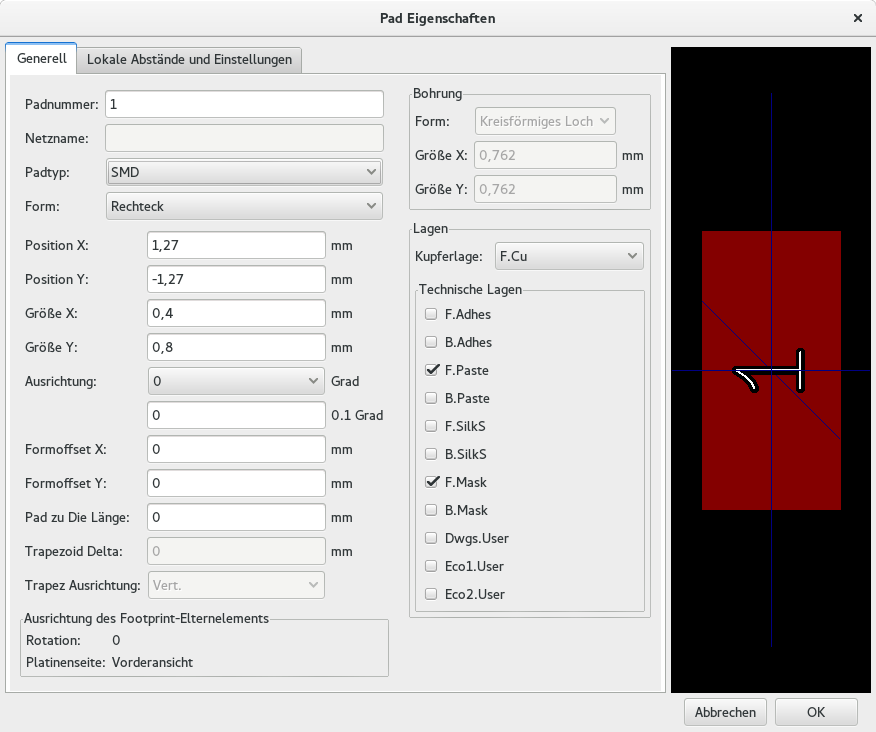 -
Setzen Sie Padnummer auf 1, die Form auf Rechteck, den Padtyp auf SMD, die Größe X zu 0,4 und die Größe Y zu 0,8. Klicken Sie auf OK. Klicken Sie wieder auf Pads hinzufügen und platzieren zwei weitere Pads.
-
Wenn Sie die Rastergröße ändern wollen klicken Sie mit der rechten Maustaste auf das Arbeitsblatt und wählen Rasterauswahl. Bedenken Sie, dass Sie die richtige Rastergröße auszuwählen bevor Sie Bauteile platzieren.
-
Verschieben Sie die Bezeichner MYCONN3 und SMD so weit das es so aussieht wie oberhalb zu sehen.
-
Beim Platzieren von Pads ist es oft nötig Abstände mit relativen Maßen zu messen. Platzieren Sie den Cursor an der Stelle von der ausgehend der temporäre Nullpunkt der Messung sein soll und betätigen die Leertaste. Beim Bewegen der Maus können Sie in der Fußleiste den relativen Abstand zum zuvor gesetzten Bezugspunkt sehen. Betätigen Sie die Leertaste wiederholt um einen neuen Nullpunkt zu setzen.
-
Fügen Sie nun dem Footprint einen Umriss hinzu. Klicken Sie auf das Icon Grafische Linie oder Polygon hinzufügen
 in der rechten
Toolbar. Ziehen Sie eine Linie um das Bauteil herum.
in der rechten
Toolbar. Ziehen Sie eine Linie um das Bauteil herum.
-
Klicken Sie auf das Icon Footprint in aktiver Bibliothek speichern
in der oberen Toolbar,
behalten Sie den Namen MYCONN3 bei.
8. Informationen über die Portabilität von KiCad Projektdateien
Welche Daten müssen Sie jemanden übersenden damit diese Person Ihr KiCad Projekt laden und benutzen kann?
Wenn Sie ein KiCad Projekt mit jemand anderen teilen möchten ist es wichtig, dass Sie die Schaltplandatei .sch, die Platinendatei .kicad_pcb, die Projektdatei .pro und die Netzlistendatei .net zusammen mit den Bauteil spezifischen Dateien für Schaltplansymbole (.lib) und für die Footprints (.kicad_mod) zusammen weiter geben. Nur so haben andere Personen die komplette Freiheit und Kontrolle den Schaltplan und die Platine zu verändern.
Mit den KiCad Schaltplänen zusammen werden auch die .lib Dateien benötigt die die Schaltplansymbole enthalten. Diese Bibliotheken müssen durch die Eeschema Einstellungen geladen werden. Auf der anderen Seite, mit den Platinen (die .kicad_pcb Dateien) können auch die Footprintdateien innerhalb der .kicad_pcb Dateien gespeichert werden. Sie können jemanden anderen nur die .kicad_pcb Datei geben und es sollte anderen möglich sein die Platine betrachten und bearbeiten zu können. Aber, wenn andere Personen Bauteile von einer Netzeliste laden wollen müssen die Footprint Bibliotheken (.kicad_mod Dateien) vorhanden und über die Einstellungen von Pcbnew geladen sein, analog zu den Schaltplansymbolen in Eeschema. Ebenfalls ist es nötig die .kicad_mod Dateien über die Einstellungen von Pcbnew zu laden damit für diese Footprints in Cvpcb gezeigt werden.
Wenn Ihnen jemand eine .kicad_pcb Datei mit den Footprints schickt und Sie möchten diese in einer anderen Platine benutzen, dann können Sie den Footprint Editor öffnen, ein Footprint aus der aktueller Platine laden und diesen in eine andere Footprint Bibliothek abspeichern oder exportieren. Sie können auch alle Footprints aus einer .kicad_pcb Datei mit einem mal exportieren indem Sie Pcbnew → Datei → Footprints archivieren → Neue Bibliothek erstellen und Footprints speichern aufrufen. Dies erstellt eine neue .kicad_mod Datei mit allen Footprints der Platine.
Als Schlusswort, wenn die Platine das einzige ist was Sie weiter geben wollen, dann ist die Platinendatei .kicad_pcb ausreichend. Wenn Sie aber anderen Personen alle Möglichkeiten geben wollen Ihren Schaltplan, die Bauteile und die Platine ändern zu können dann ist es sehr sinnvoll das Sie den kompletten Projektordner als Zip Datei komprimieren und senden:
tutorial1/
|-- tutorial1.pro
|-- tutorial1.sch
|-- tutorial1.kicad_pcb
|-- tutorial1.net
|-- library/
| |-- myLib.lib
| |-- myOwnLib.lib
| \-- myQuickLib.lib
|
|-- myfootprint.pretty/
| \-- MYCONN3.kicad_mod
|
\-- gerber/
|-- ...
\-- ...
9. Mehr KiCad Dokumentation
Dies war ein kurzer Guide durch die meisten Funktionen von KiCad. Für noch mehr detailliertere Instruktionen besuchen Sie die Hilfe Dateien der KiCad Module die über den Menüpunkt Hilfe aufgerufen werden können. Klicken Sie jeweils auf Hilfe → [Modul]-Benutzerhandbuch.
KiCad kommt mit einem Set von multilingualen Benutzerhandbüchern für alle vier Software Komponenten.
Die englischen Versionen von allen KiCad Modulen wird mit KiCad verteilt.
Als Ergänzung zu den Benutzerhandbüchern wird Kicad mit diesem Tutorial verteilt, welches auch in andere Sprachen übersetzt worden ist. All die verschiedenen Versionen dieses Dokuments werden kostenfrei mit allen aktuellen Versionen von KiCad verteilt. Dieses Tutorial und auch die Handbücher sollten zusammen mit der Version von KiCad passend zu Ihrer Plattform verteilt werden.
Zum Beispiel, unter Linux sind die typischen Orte die folgenden Verzeichnisse, abhängig von der genauen Distribution:
/usr/share/doc/kicad/help/de/ /usr/local/share/doc/kicad/help/de
Unter Windows ist dies Anleitungen zu finden unter:
<installation directory>/share/doc/kicad/help/de
In OS X:
/Library/Application Support/kicad/help/de
9.1. KiCad Dokumentation im Internet
Die aktuellsten KiCad Dokumentationen sind in verschiedenen Sprachen erhältlich im Internet.